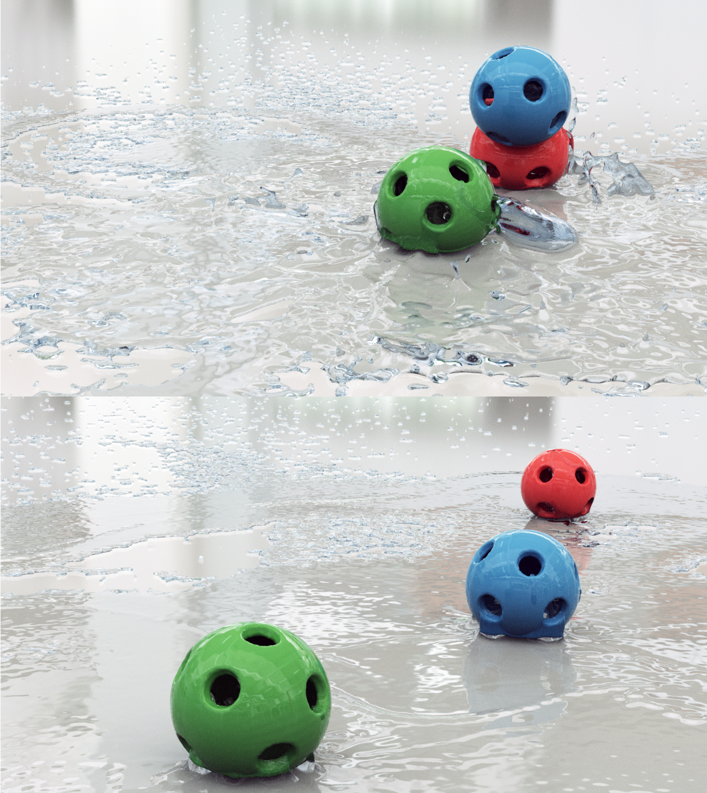

|

|
|
Abstract:
We propose a novel scheme for simulating two-way coupled interactions between nonlinear elastic solids and incompressible fluids. The key ingredient of this approach is a ghost matrix operator-splitting scheme for strongly coupled nonlinear elastica and incompressible fluids through the weak form of their governing equations. This leads to a stable and efficient method handling large time steps under the CFL limit while using a single monolithic solve for the coupled pressure fields, even in the case with highly nonlinear elastic solids. The use of the Material Point Method (MPM) is essential in the designing of the scheme, it not only preserves discretization consistency with the hybrid Lagrangian-Eulerian fluid solver, but also works naturally with our novel interface quadrature (IQ) discretization for free-slip boundary conditions. While traditional MPM suffers from sticky numerical artifacts, our framework naturally supports discontinuous tangential velocities at the solid-fluid interface. Our IQ discretization results in an easy-to-implement, fully particle-based treatment of the interfacial boundary, avoiding the additional complexities associated with intermediate level set or explicit mesh representations. The efficacy of the proposed scheme is verified by various challenging simulations with fluid-elastica interactions.
|

![[PHOTO]](../../images/knight_small.png)